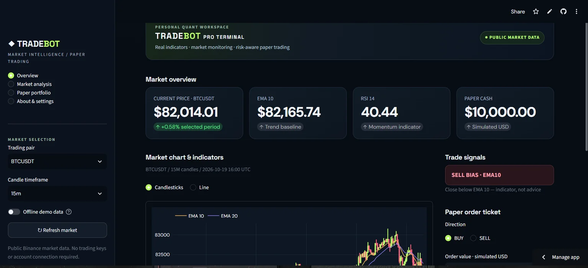

Market charts & indicators
Analyze candlesticks and technical indicators across multiple crypto markets and timeframes.
A working Python trading research dashboard with market charts, EMA and RSI indicators, trade signals, and an interactive paper-trading workspace.

Analyze candlesticks and technical indicators across multiple crypto markets and timeframes.
Review EMA-based trading signals while exploring public market data in a Python-powered dashboard.
Simulate buy and sell orders and monitor portfolio performance without placing real-money trades.
TRADEBOT is an independently developed Python application that brings together market monitoring, technical analysis, and a practical paper-trading interface. Its dashboard runs on Streamlit, while the portfolio hosts this project introduction.
Paper trading only. Market prices depend on external data availability. Indicators and signals are educational tools, not investment advice. If the hosting service is asleep, allow a moment for the public app to restart.